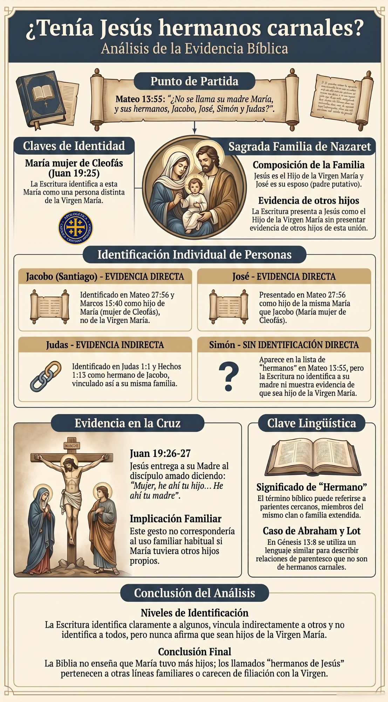

Objetivo inmediato
Desarmar la objeción mostrando que “hermanos” no significa necesariamente hijos de la misma madre, y que los llamados hermanos de Jesús son identificables por otras líneas familiares.
Esta ficha está diseñada para responder con rapidez, profundidad y orden a una de las objeciones protestantes más frecuentes contra la virginidad perpetua de la Santísima Virgen María. La herramienta permite contestar en debate, sostener estudio prolongado y rastrear bíblicamente a los llamados “hermanos de Jesús” con método apologético ACCAR.
Desarmar la objeción mostrando que “hermanos” no significa necesariamente hijos de la misma madre, y que los llamados hermanos de Jesús son identificables por otras líneas familiares.
Biblia Reina-Valera completa, conexión lógica entre pasajes, explicación doctrinal clara, uso de Juan 19, Lucas 1:34 y apoyo patrístico de San Jerónimo.
Sirve para responder en conversación inmediata, organizar un estudio serio y preparar defensa doctrinal frente a objeciones repetitivas sobre la Virgen María.
“La Biblia dice que Jesús tenía hermanos: Jacobo, José, Simón y Judas. Por lo tanto, María tuvo más hijos y no fue siempre virgen.”
Esa conclusión no se sigue del texto bíblico. En la Escritura, “hermanos” puede significar también parientes cercanos. Además, cuando la Biblia identifica a varios de los llamados “hermanos de Jesús”, muestra que pertenecen a otra línea familiar. Finalmente, Jesús entrega a su Madre al apóstol Juan en la cruz, algo completamente anormal si María hubiera tenido otros hijos propios.
Antes de entrar a cada pasaje, es necesario recordar que el mundo bíblico no usa siempre los términos familiares con el mismo rigor moderno occidental. En el contexto semita, “hermano” puede abarcar hermanos carnales, sobrinos, primos, parientes cercanos, miembros del mismo clan o incluso relaciones de familia ampliada. Por eso, un argumento que parte simplemente de la palabra “hermanos” ya comienza mal si no estudia el uso bíblico real del término.
Esta sección debe usarse al inicio de la conversación. La secuencia correcta es: primero demostrar que “hermano” no equivale automáticamente a “hijo de la misma madre”; segundo, pedir identificación concreta de los nombres; tercero, rastrear bíblicamente madres y líneas familiares; cuarto, cerrar con Juan 19. Si se hace así, la objeción queda desarmada desde su base metodológica.
El contexto cultural judío no sustituye la prueba bíblica detallada, pero sí impide que el interlocutor imponga una lectura anacrónica al texto sagrado. En ACCAR, esta pieza funciona como herramienta de apertura apologética.
Este bloque funciona como pieza obligatoria del sistema ADF: no se responde solo con una palabra aislada, sino con nombres concretos, madres identificables y relaciones bíblicas comparadas. La fuerza apologética aquí consiste en mostrar visualmente que los llamados “hermanos de Jesús” no quedan demostrados como hijos de la Santísima Virgen María.

| Nombre | Texto donde aparece como “hermano” | Otro dato bíblico relevante | Conclusión apologética ACCAR |
|---|---|---|---|
| Jesús | Mateo 13:55; Marcos 6:3 | Juan 19:25-27 muestra a María como su Madre y entregada a Juan | Jesús es el único hijo de María presentado con total claridad en esta línea argumental |
| Jacobo | Mateo 13:55; Marcos 6:3 | Mateo 27:56; Marcos 15:40; Marcos 16:1 lo vinculan a otra María | No queda presentado como hijo de la Virgen María, sino asociado a otra línea familiar |
| José | Mateo 13:55; Marcos 6:3 | Mateo 27:56; Marcos 15:40 lo vinculan con “María la madre de Jacobo y de José” | La propia Escritura lo reubica fuera de la maternidad directa de la Virgen María |
| Judas | Mateo 13:55; Marcos 6:3 | Judas 1:1 y Hechos 1:13 lo presentan en relación con Jacobo | Su identificación interna apunta a la misma red familiar rastreada, no a una prueba contra la virginidad perpetua |
| Simón | Mateo 13:55; Marcos 6:3 | No se ofrece un texto que lo presente como hijo de la Virgen María | La objeción sigue sin probar que sea hijo de María; el nombre solo no basta |
En debate, usa este orden: nombra a Jacobo y José, muéstralos en la cruz vinculados a otra María, conecta a Judas con Jacobo, y luego pregunta dónde enseña la Biblia que todos ellos son hijos de la Virgen María. Allí la objeción se queda sin prueba positiva.
El primer error de la objeción consiste en imponer al lenguaje bíblico un uso moderno y rígido de la palabra “hermano”. En la cultura semita, y por extensión en el uso bíblico, el término puede abarcar hermanos carnales, sobrinos, primos, miembros del mismo clan o parientes cercanos. Por eso, no basta con leer la palabra “hermanos” para concluir automáticamente que María tuvo otros hijos.
Aquí Abram llama “hermano” a Lot. Este texto, por sí solo, ya obliga a no imponer a la palabra “hermano” un sentido exclusivamente biológico.
Lot vuelve a ser llamado “hermano”, confirmando el uso familiar amplio del término.
Este texto aclara que Lot era hijo de Harán. Por tanto, Lot era sobrino de Abram, no hermano carnal.
Labán llama “hermano” a Jacob en un contexto de parentesco familiar más amplio.
Aquí “hermanos” designa claramente al grupo familiar o clan que acompaña a Labán, no solamente hermanos carnales.
Cristo llama “hermanos” a sus discípulos. El término en el Nuevo Testamento tampoco queda reducido siempre a la sangre o a la misma madre.
La comunidad cristiana es llamada “hermanos”. El Nuevo Testamento conserva un uso amplio y no meramente biológico del término.
Lot es llamado “hermano” de Abram, aunque Génesis 11:27 deja claro que era su sobrino. Labán llama “hermano” a Jacob dentro de un parentesco ampliado. Y el Nuevo Testamento mismo usa “hermanos” para discípulos y miembros de la comunidad creyente. La Escritura, por tanto, no obliga a entender “hermanos” como “hijos de la misma madre” en todos los casos.
En conversación, conviene preguntar: “¿La Biblia siempre usa ‘hermano’ para hijos de la misma madre?” Si la otra persona responde que sí, basta llevarla a Abraham y Lot. Si allí acepta que el término puede ser más amplio, entonces ya no puede usar automáticamente la palabra “hermanos de Jesús” como prueba de que María tuvo más hijos.
La palabra “hermanos” por sí sola no prueba nada contra la virginidad perpetua de María. Antes de sacar conclusiones, hay que identificar a las personas concretas de las que habla el texto.
El método apologético clave aquí consiste en hacer lo que manda la buena exégesis: rastrear nombres, madres, padres y pasajes paralelos. No basta con citar que Jesús tenía “hermanos”; hay que preguntar quiénes son, de quién son hijos y cómo reaparecen en la Biblia. Allí la objeción se desarma.
Este pasaje presenta los nombres que luego deben ser rastreados. Aquí comienza el trabajo apologético serio.
Marcos confirma el mismo grupo de nombres. La Biblia no se agota aquí: esos nombres reaparecen en otros textos y deben seguirse.
El texto distingue entre “su madre”, “sus hermanos” y “sus discípulos”. Esa forma de hablar no prueba por sí sola maternidad compartida.
Aquí la Escritura habla expresamente de “María la madre de Jacobo y de José”. Eso es decisivo, porque los nombres coinciden.
Marcos vuelve a unir a Jacobo y José con otra María. La repetición fortalece la identificación.
Juan introduce a “María mujer de Cleofas” junto a la cruz. En el cruce de pasajes, esta presencia es fundamental.
La expresión “la otra María” confirma que la Escritura distingue claramente entre varias Marías.
La repetición de “María madre de Jacobo” refuerza que este Jacobo no es presentado como hijo de la Virgen María.
Judas se identifica como “hermano de Jacobo”, no como hijo de María la Virgen. Esto refuerza una estructura familiar distinta.
La Escritura sigue identificando a Judas por su relación con Jacobo. Esto encaja con el rastreo familiar apologético.
En Mateo 13 y Marcos 6 aparecen los nombres Jacobo, José, Simón y Judas entre los llamados “hermanos” de Jesús. Más tarde, en la escena de la cruz, Mateo 27, Marcos 15 y Marcos 16 hablan expresamente de “María la madre de Jacobo y de José”. Juan 19:25 menciona a “María mujer de Cleofas”, y Mateo 28:1 distingue todavía a “la otra María”. Además, Judas 1:1 y Hechos 1:13 vinculan a Judas con Jacobo. Así, la propia Escritura presenta otra línea familiar, lo cual impide identificar automáticamente a Jacobo, José y Judas como hijos de la Santísima Virgen.
San Jerónimo, en su obra Contra Helvidio, respondió precisamente a la objeción de que María tuvo otros hijos. Su línea central fue que los llamados “hermanos del Señor” eran parientes y que varios de esos nombres deben vincularse a otra María, no a la Virgen. En la tradición latina, este argumento llegó a ser clásico y decisivo.
No discutas en abstracto. Haz preguntas concretas: “¿Quién era Jacobo? ¿Quién era José? ¿Quién aparece como madre de Jacobo y José en la cruz? ¿Por qué Judas aparece como hermano de Jacobo?” En cuanto el interlocutor ve que la Biblia vincula esos nombres a otra línea familiar, la objeción pierde fuerza.
La Escritura no presenta a los llamados “hermanos de Jesús” como hijos de la Virgen María. Al contrario, varios nombres reaparecen ligados a otra María y a otra red familiar, lo cual apoya la interpretación católica de que se trata de parientes cercanos.
Este argumento no es secundario: es uno de los más fuertes, porque procede del mismo momento de la cruz. Jesús, al morir, confía su Madre al discípulo amado. Si María hubiera tenido otros hijos carnales, ese gesto sería extraño, jurídicamente impropio y humanamente ofensivo para ellos.
Cristo entrega su Madre a Juan y Juan la recibe en su casa. Si existieran otros hijos propios de María, el gesto sería anómalo.
Aquí aparecen los llamados “hermanos” sin el rol natural que correspondería a supuestos hijos responsables de su madre.
Después de la resurrección, María y los “hermanos” aparecen juntos en la comunidad creyente, sin que eso revoque la entrega hecha a Juan.
Cristo mismo muestra que el lenguaje de familia puede ir más allá de la biología y del hogar natural, incluso dentro del contexto evangélico.
Juan 19 muestra un acto concreto de entrega filial: Jesús entrega a María a Juan, y Juan la recibe en su casa. Juan 7 muestra que los llamados “hermanos” no tenían todavía una postura de fe clara durante el ministerio público. Hechos 1 muestra a María y a los “hermanos” del Señor entre la comunidad cristiana. Y Marcos 3 recuerda además que el mismo Cristo usa el lenguaje familiar con un alcance más amplio. La escena decisiva sigue siendo la de la cruz: Jesús entrega a María a Juan, no a “sus hermanos”.
Esta pregunta suele desarmar mucho: “Si María tenía varios hijos más, ¿por qué Jesús no la dejó al cuidado de ellos?” No es una pregunta superficial. Obliga a mirar el texto y a reconocer que la conducta de Cristo en la cruz es incompatible con la idea de que María tuviera otros hijos propios que vivieran como tales.
Juan 19 no encaja con la hipótesis protestante. El gesto de Jesús tiene pleno sentido si María no tenía otros hijos propios; por eso la tradición católica ve en este pasaje una confirmación poderosa de su virginidad perpetua.
La pregunta de María al ángel no es banal ni redundante. Si María esperaba una vida conyugal ordinaria en el sentido común del matrimonio, la promesa de un hijo no habría necesitado esa clase de pregunta. Sin embargo, María responde de una manera que revela una disposición especial respecto a la virginidad.
La pregunta “¿Cómo será esto? pues no conozco varón” tiene peso teológico y revela una disposición virginal singular.
Lucas insiste en llamar “virgen” a María. La insistencia del texto no es casual ni decorativa.
Mateo confirma que la concepción se sitúa antes de la vida conyugal ordinaria. Este dato armoniza con la lectura católica de Lucas 1:34.
Mateo conecta el misterio de María con la concepción virginal anunciada proféticamente. La virginidad no es un detalle pasajero, sino parte del signo.
Lucas subraya dos veces que María era virgen y conserva su pregunta singular al ángel: “¿Cómo será esto? pues no conozco varón.” Esa reacción no suena a una mujer que simplemente espera tener vida matrimonial normal y piensa en un hijo futuro por vía natural. Mateo 1:18 y Mateo 1:20-23 sitúan además la concepción en el marco de una intervención divina y de la profecía de la virgen. Todo esto armoniza con la lectura católica de una virginidad singular y permanente.
Los Padres vieron en esta pregunta algo más que una observación biológica. La tradición patrística leyó en Lucas 1:34 un indicio serio de la singular consagración de María. San Jerónimo y otros defensores de la virginidad perpetua insistieron en que la pregunta tendría poco sentido si María hubiera previsto una vida conyugal ordinaria sin más.
En conversación, puedes plantearlo así: “Si María estaba desposada y simplemente pensaba vivir normalmente como cualquier esposa, ¿por qué pregunta ‘cómo será esto’?” La pregunta de María apunta a algo más profundo que una mera espera natural del matrimonio.
Lucas 1:34 no es una prueba aislada, pero sí una pieza teológica muy importante: armoniza perfectamente con la fe de la Iglesia en la virginidad perpetua de María.
Muchas objeciones descansan en una lectura apresurada de Mateo 1:25 y Lucas 2:7. Se afirma que si José “no la conoció hasta que dio a luz” entonces después sí la conoció; y que si Jesús es “primogénito” entonces vinieron otros hijos más. Ninguna de las dos conclusiones es necesaria.
El texto afirma con claridad la virginidad antes del parto. Pero la expresión “hasta que” no obliga, por sí misma, a afirmar una relación posterior.
Este ejemplo es demoledor: decir que Mical no tuvo hijos “hasta el día de su muerte” no significa que los tuvo después.
La expresión “hasta hoy” no exige que después se conociera la sepultura. De nuevo, “hasta” no obliga a un cambio contrario posterior.
Aquí “primogénito” no debe leerse con mentalidad moderna aritmética. La palabra puede funcionar como categoría jurídica y cultual.
Éxodo define el sentido legal: primogénito es el primero que abre matriz. No se exige que haya un segundo.
La ley habla del primogénito como categoría jurídica del primero que abre matriz, no como prueba matemática de hijos posteriores.
“Primogénito” puede funcionar también como título de dignidad y preeminencia, no solamente como conteo de hermanos posteriores.
En 2 Samuel 6:23 y Deuteronomio 34:6, las expresiones con “hasta” no significan automáticamente que después ocurrió lo contrario. Por tanto, Mateo 1:25 no obliga por sí mismo a un cambio posterior. De igual modo, Lucas 2:7, Éxodo 13:2 y Números 18:15 muestran que “primogénito” es un título legal del primero que abre matriz, mientras Hebreos 1:6 recuerda además que el término puede tener sentido de dignidad y preeminencia. Nada de eso destruye la doctrina católica.
Una respuesta simple y fuerte es esta: “La palabra ‘hasta’ en la Biblia no siempre indica que después ocurrió lo contrario; y ‘primogénito’ es un término legal del primero que abre matriz, no una prueba de hijos posteriores.” Eso obliga a abandonar una lectura mecánica del texto.
Ni Mateo 1:25 ni Lucas 2:7 destruyen la doctrina católica. Leídos en el uso bíblico real, ambos textos son perfectamente compatibles con la virginidad perpetua de la Virgen María.
La palabra “hermanos” en la Biblia no significa siempre hijos de la misma madre. La misma Escritura usa ese término para parientes cercanos. Además, varios de los llamados “hermanos de Jesús”, como Jacobo y José, aparecen vinculados a otra María en los relatos de la cruz. Y si María hubiera tenido más hijos propios, Jesús no la habría entregado a Juan en Juan 19.
Primero: demuestra que “hermano” puede significar pariente. Segundo: pide identificar bíblicamente a Jacobo y José. Tercero: muestra que hay otra María relacionada con esos nombres. Cuarto: remata con Juan 19, donde Jesús entrega a su Madre a Juan. Esa secuencia suele bastar para romper la objeción.
La objeción de que María tuvo más hijos parte de una lectura simplista de la palabra “hermanos” y de una identificación deficiente de los personajes. El primer paso serio consiste en admitir que, en el lenguaje bíblico, “hermano” puede indicar parentesco amplio. El segundo paso es rastrear los nombres mencionados en Mateo 13 y Marcos 6; al hacerlo, aparece otra María asociada a Jacobo y José, y además una red interna donde Judas aparece unido a Jacobo. El tercer paso es considerar Juan 19, donde Cristo entrega a su Madre al discípulo amado, lo cual no se entiende si existieran otros hijos propios de María. El cuarto paso es interpretar Lucas 1:34 dentro de la tradición viva de la Iglesia, viendo allí un indicio profundo de virginidad singular. Finalmente, Mateo 1:25 y Lucas 2:7 deben ser leídos según el uso bíblico de “hasta” y “primogénito”, no según prejuicios modernos. En conjunto, la Escritura leída en continuidad con la tradición patrística sostiene la doctrina católica de la virginidad perpetua de María.
Este espacio queda reservado para observaciones de uso real en debate, objeciones nuevas, respuestas que hayan funcionado mejor y mejoras futuras del tema.